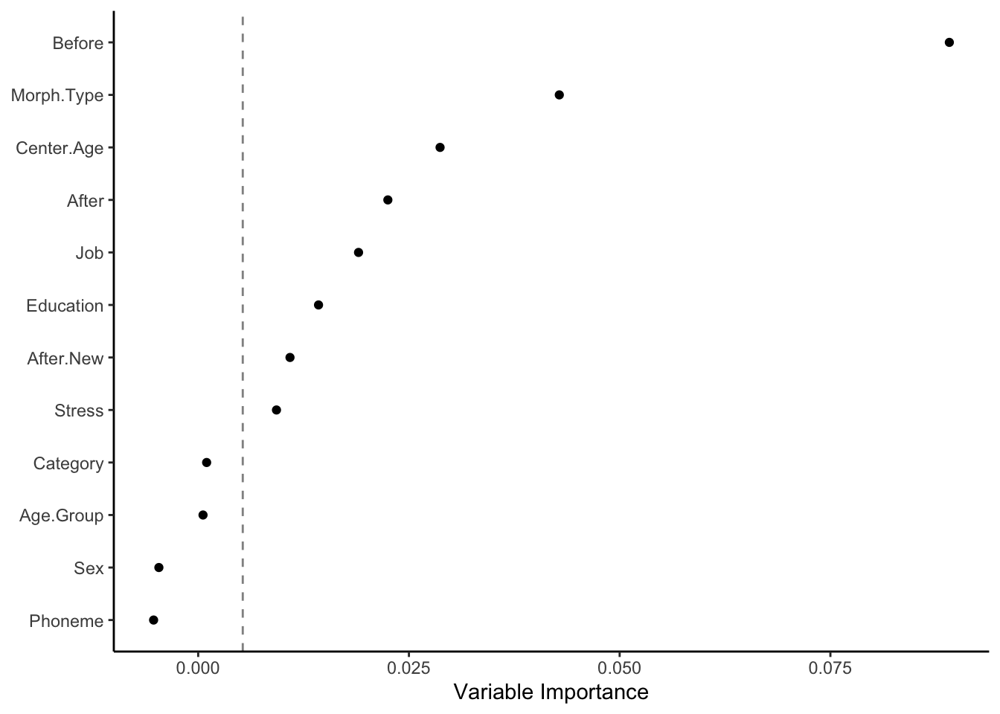

# Set Seed
set.seed(123456)Random Forests: The Basics
Doing a basic random forest analysis.
Matt Hunt Gardner ![]()
Another useful type of analysis available as part of the partykit package is a random forest analysis. This algorithm determines the most common classification tree (like the one above) among a large collection of trees built on random subsets of a dataset. Random forests are useful because they can rank the relative importance of independent variables with respect to a dependent variable. They can also simultaneously test variables that are (multi)collinear. Logistic regression (discussed in Mixed-Efects Logistic Regression Analysis) assumes little or no collinearity among independent predictor variables. Variables like lexical status (Category) and morphological type (Morph.Type) are highly correlated (i.e., semi-weak and past-tense verbs are all lexical), thus should not be included as predictors in the same logistic regression model.1
Random forest analysis take a lot of computing power and time. I usually leave my computer to run the analysis overnight. The bigger your dataset and the more predictors you include, the longer the analysis will take.
The first step is to first set the “seed” before running your random forest analysis.
The random forest algorithm finds the most common classification tree from those built on random samplings of the data. Setting the seed for R’s random number generator means you can both generate random samples of your data for creating these trees, and you can also make your analysis reproducible. Think of each seed as a list of random numbers. Above, the seed 123456 is used, but the seed you select is arbitrary. The one time it is important to select a specific seed is if you are trying to reproduce results. In that case, you must use the same seed as the previous analysis. Keeping a record of your seed setting in a script file and reporting your seed setting in a manuscript is therefore very important.
You build your random forest formula just like you built the formula for your ctree(), but with the function cforest(). The formula here uses Dep.Var as the dependent variable and Stress, Category, Morph.Type, Before, After, Sex, Education, Job, After.New, Center.Age, Age.Group, and Phoneme as predictor variables. The data tested is set using data=td.2
The setting ntree=128 specifies the number of trees to grow. I have run analyses where I’ve specified 10,000 trees and it took almost 24 hours to compute on my 2015 MacBook Pro. As a rule, the more data/independent variables you have, the more trees you should specify; however, Oshiro et al. (2012) point out, based on their test with 29 different datasets, that after 128 trees there is no significant improvement in the accuracy of the resulting random forest. As a random forest is never my only analysis, I now specify 128 trees for casual data exploration. I use at least 5,000 for any random forest that I include in a published manuscript.
The cforest() function creates the random forest, but you still need to determine which independent variables do the best job of describing the data averaged over all of the trees created. To do this you use the function varimp() on the result of cforest() (here the object td.cforest). The setting conditional=TRUE is important when independent variables are collinear; it should always be used. In simple terms, this setting ensures that, if two independent variables are collinear, only the variable that does a better job at explaining the variation in the data will be considered as an important descriptor and the other will be ignored.
Note
You’ll notice that I use the term descriptor for random forests and predictor for regression analysis. This is because regression analysis tests what independent variables do the best job of predicting whether a given token will be Deletion or Realization. The random forest analysis doesn’t predict, instead it determines the most useful way of dividing the data in order to best explain when Deletion and Realization occurs.
The varimp() function is the part of this analysis that takes a long time and lots of computing power. Here is where the size of your dataset, the number of trees grown, and the number of independent variables all contribute to how much time and computing power is needed.
The result of varimp() is a list, rather than a dataframe. To turn it into a dataframe we need to use the function melt(). The setting id.var=NULL turns the names of each independent variable into a value in a column called variable. If this setting is not used R will instead use the independent variable names as row names, which is not useful for graphing.
Given that varimp() often takes a long time, it is a good idea to save the results as a text file. That way you don’t have to re-run the analysis if you want to refer to it at a later date. As above, doing so will automatically melt the data, but it won’t include column names. If you read this file back into R you need to assign the column names using the function names(td.cforest.results)<-c("variable", "value").
# Calculate a Random Forest testing Stress, Category, Morph.Type, Before,
# After, Sex, Education, Job, After.New, Center.Age, Age.Group , and Phoneme
library(partykit)
td.cforest <- cforest(Dep.Var ~ Stress + Category + Morph.Type + Before + After +
Sex + Education + Job + After.New + Center.Age + Age.Group + Phoneme, data = td,
ntree = 128)
td.cforest.varimp <- varimp(td.cforest, conditional = TRUE)
library(reshape2)
td.cforest.results <- melt(data.frame(as.list(td.cforest.varimp)), id.vars = NULL)
# Write Random Forest to File
write.table(td.cforest.results, file = "Data/tdCForestVarimp.txt", quote = FALSE,
row.names = FALSE)# Read Random Forest from File
td.cforest.results <- read.table(file = "Data/tdCForestVarimp.txt", header = TRUE,
row.names = NULL)
print(td.cforest.results) variable value
1 Stress 0.0092881683
2 Category 0.0010024089
3 Morph.Type 0.0428405420
4 Before 0.0891103455
5 After 0.0225015590
6 Sex -0.0046620498
7 Education 0.0142773676
8 Job 0.0190235499
9 After.New 0.0108922165
10 Center.Age 0.0286954756
11 Age.Group 0.0005741748
12 Phoneme -0.0052887491Now that you have the variable importance of each independent variable in a dataframe you can compare the values to determine which variables do the best job at explaining the variation. You could do this by just looking at the values — higher values are more useful, lower values are less useful — however, the more common way to compare the variables is by graphing them.
Older manuals suggest using the R base graphics function dotplot() to visualize this data. I prefer using ggplot() because it is so much more customizable. As in previous chapters, I won’t list all the different ways you can customize a ggplot(), but I will show you how to make and save a nice looking random forest graph.
library(ggplot2)
# Reorder variable importance by highest to lowest value in column value
td.cforest.results$variable <- reorder(td.cforest.results$variable, td.cforest.results$value)First you make sure ggplot2 is loaded using the library() function. Next, you need to order the descriptor variable names in the td.cforest.results column variable based on the values of the column value. To do this you use the reorder() function, which takes two objects: first, the column you want to sort (here td.cforest.results$variable); and second, the column you want to sort by (here td.cforest.results$value). You assign this reordered dataframe back as the original dataframe using the assignment operator <-.
Alternatively, you could to this in a tidy way using arrange()
# Reorder variable importance by highest to lowest value in column value, but
# tidy
td.cforest.results <- td.cforest.results %>%
arrange(variable, value)Next you need to find the absolute value of the lowest negative-scoring descriptor variable. You’ll see why in a second. You create a new object td.cforest.min and, using the assignment operator <-, make it equal to the absolute value (using abs()) of the lowest negative-scoring variable (using min()). Can can also do this in a tidy way using %>%, though it’s not much quicker to type:
# Get absolute minimum value of column value
td.cforest.min <- abs(min(td.cforest.results$value))
# Get absolute minimum value of column value, but tidy
td.cforest.min <- td.cforest.results$value %>%
min() %>%
abs()Now you have everything you need to visualize the variable importance of the variables in the random forest. You create a new object dotplot, which will be the graph created by ggplot(). The function ggplot() has a special syntax. Generally you first create the plot using ggplot(); this is the function where you specify what values are going to serve as the x and y axes of the graph and also what data will be used. Specifying the x and y axes values is done inside the aesthetics (aes()) of the gplot(). These aesthetics are carried forward to all the other components you add to the plot. If you stop just at the ggplot() function, then dotplot would only be the plotting area, plus an x and y axes.
The next step is to add some data points to your plot. You do this by adding what are called “geom’s” ([’gi.owmz]). You want to create a dotplot, so you use geom_point(), which will add the corresponding x and y values (inherited from aes()) as points. Use + to add the geom to the already created ggplot(). The geom geom_point() can be on a separate line, but the + must be on the same line as the object being added to.
The next step is to name the x-axis by adding xlab() with the label in quotation marks. You can remove the y-axis label by specifying the label as NULL. Much of the customization of ggplot()’s look is done through the theme() function. I’m not going to delve too deep into customization; instead, I’m going to suggest one of the built-in themes: theme_classic(), which gives a very bare-bones graph (my personal preference). There are other built-in themes like theme_linedraw(); theme_bw(); theme_dark(); etc. Google is your best friend when you want to customize the look of your ggplot2 visualizations.
The final element you add to the dotplot is a vertical line where x = td.cforest.min. This is the absolute value of the lowest negative-scoring variable you calculated earlier. The geom geom_vline() adds the vertical line. Its first argument is where you specify the xintercept, i.e., where you want the vertical line to intercept the x-axis. The second argument is the linetype; here you specify it as 2. There are different line types in R; 0 is “blank”, 1 is “solid”, 2 is “dashed”, 3 is “dotted”, 4 is “dotdash”, 5 is “longdash”, and 6 is “twodash”. You can either use the line type number or name, but the name must be in quotation marks. The alpha value is a number between 0 and 1 that indicates how transparent to make the line. Here 0.5 (50% transparent) is used.
If you type dotplot in the R console and hit execute, you’ll see what your graph looks like.
# Create object of Random Forest as a dotplot using ggplot2
library(ggplot2)
dotplot <- ggplot(td.cforest.results, aes(x = value, y = variable)) + geom_point() +
xlab("Variable Importance") + ylab(NULL) + theme_classic() + geom_vline(xintercept = td.cforest.min,
linetype = 2, alpha = 0.5)
# Save dotplot
ggsave("Data/tdCForest.png", dotplot, width = 4, height = 4, units = "in", dpi = 300)
To save the graph use the function ggsave(). The first argument is the save destination. You can specify which type of file you want to save your image as by using different file extensions: .png, .pdf, etc. I generally only use PNG or PDF files. The second argument is the name of the object to save (here dotplot). Next you specify the width and height of the image you want to create and the units of the values you specify. You don’t need to do this, but I like to so that I know exactly how big my image will be. I find this helpful when later inserting images in my manuscripts. It is also a good way to ensure consistency in size from graph to graph. For PNG you can also specify the dpi (dots per inch/pixels per inch), which will be the resolution of the final image. The higher the dpi, the bigger the file, but also the clearer the image will be if you decide later to zoom in on it or enlarge it. Though, if you need a bigger image it’s better to just specify the exact size using the height and width arguments, rather than enlarging a smaller image. For graphs with little to no text 300 dpi is sufficient. If there is a lot of text, you may want to bump it up to 600 dpi. For certain publishers there may be a specific dpi needed.
In the dotplot above, the descriptor variables are ordered top to bottom from most important to least important. Variables can be considered informative if their variable importance is above the absolute value of the lowest negative-scoring variable. The rationale for this rule of thumb, according to Strobl et al. (2009: 342), is that importance of irrelevant variables varies randomly around zero. In other words, everything to the right of the dashed line is a useful in describing Deletion in the data. The further to the right of the dashed line, the more useful.
The variables with the highest variable importance are Before and Morph.Type, followed by Center.Age, After, Job, Education, After.New and Stress. The variables Category, Age.Group, Sex, and Phoneme are all to the left of the dashed line, so you can consider them as not useful in describing the variation.
You’ll notice that many of the independent variables included are collinear — in other words, the value of one can predict (all or some of) the values of the other. As I noted above, Category and Morph.Type are collinear because all Semi-Weak and Past tokens are also Lexical. Likewise Age.Group and Center.Age are completely collinear; the value of Center.Age can exactly predict the value of Age.Group. Values for both age measures can also do a good job of predicting both Education and Job in the Cape Breton data. Younger speakers are generally Educated and have White (collar) or Service jobs. All Students in the variable Education are also Students for the variable Job, and all are also Young. It would violate the assumptions of the model to include all these predictors at the same time in the same regression (see next chapter); however, these collinear variables can be included in a random forest. One of the greatest uses of a random forest analysis is when you have multiple ways of categorizing the same phenomenon (like social class, which can be operationalized by either Job or Education, or age which can be operationalized as a continuous variable like Center.Age, or a discrete variable like Age.Group) and you want to decide which categorization to use.
In the dotplot the variable After is higher ranked than After.New. This would be good justification for choosing After — which includes a separate level for (t, d) before /h/ — instead of After.New in further analyses. Likewise, Job is describes the variation better than Education; the random forest therefore points to Job being a more useful reflection of social class stratification than Education for the (t, d) variable. The only caveat is that when selecting between independent variables that are collinear, you must also take into account the hypotheses that you aim to test. In other words, selection of variables should be also be independently motivated.
A very important thing to remember about random forest analysis is that they are truly random, so the results can vary from run to run depending on which seed has been set. For this reason it’s a good idea to verify your findings by re-running your random forest analysis using different seeds and perhaps different numbers of trees. Below is the code for generating a random forest from seed 654321 and 8,000 randomly grown trees (I also used theme_linedraw() instead of theme_classic()). You’ll see that the variable importance rankings are nearly identical. Before is far-and-away the most informative descriptor, followed by Center.Age and Morph.Type, then Job, After, and Education, and finally marginally-informative Stress and After.New. This gives me confidence that the results from the previous random forest are relatively accurate. It also provides justification for choosing Job over Education as a metric of social status, Center.Age over Age.Group as a measure of apparent time, and Morph.Type over Category (two highly-correlated descriptors). Sex and Phoneme also appear to be poor descriptors of the variation in the data, so leaving them out of regression analysis (in order to simplify modelling), could also be justified.
set.seed(654321)
library(partykit)
td.cforest2 <- cforest(Dep.Var ~ Stress + Category + Morph.Type + Before + After +
Sex + Education + Job + After.New + Center.Age + Age.Group + Phoneme, data = td,
ntree = 8000)
td.cforest2.varimp <- varimp(td.cforest2, conditional = TRUE)
library(reshape2)
td.cforest2.results <- melt(data.frame(as.list(td.cforest2.varimp)), id.vars = NULL)td.cforest2.results$variable <- reorder(td.cforest2.results$variable, td.cforest2.results$value)
td.cforest2.min <- abs(min(td.cforest2.results$value))
ggplot(td.cforest2.results, aes(x = value, y = variable)) + geom_point() + xlab("Variable Importance") +
ylab(NULL) + theme_linedraw() + geom_vline(xintercept = td.cforest.min, linetype = 2,
alpha = 0.5)Another important thing to remember when using random forest analyses is that the values along the x-axis are only relative rankings for a specific random forest. The absolute values shouldn’t be interpreted or compared across different studies (Strobl et al. 2009: 336). What you can compare across studies is the relative ranking of variables along the y-axis and which variables are on each side of the dashed line. Further, random forests do not take into account the weirdness of sociolinguisic data, which generally includes an inconsistent number of tokens from each speaker. Mixed-effects regression can do this. So, random forests should always be used in conjunction with other forms of data modelling like mixed-effects regression.
Footnotes
See Tagliamonte 2012 and Tagliamonte & Baayen (2012) for a variationist-focused explanation of random forest analysis and its relationship to other analyses.↩︎
If you don’t have the
tddataset loaded in R, go back to Doing it all again, buttidyand run the code.↩︎
Reuse
CC-BY-SA 4.0
Citation
BibTeX citation:
@online{huntgardner,
author = {HuntGardner, Matt},
title = {Random {Forests:} {The} {Basics}},
series = {Linguistics Methods Hub},
volume = {Doing LVC with R},
date = {},
url = {https://lingmethodshub.github.io/content/R/lvc_r/090_lvcr.html},
doi = {10.5281/zenodo.7160718},
langid = {en}
}
For attribution, please cite this work as:
HuntGardner, Matt. n.d. Random Forests: The Basics. Linguistics
Methods Hub: Doing LVC with R. (https://lingmethodshub.github.io/content/R/lvc_r/090_lvcr.html).
doi: 10.5281/zenodo.7160718